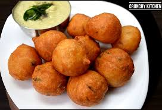

Goli Baje

Goli Baje is a popular snack from the coastal regions of India, particularly Karnataka. These are soft, spongy fritters made from a fermented batter of rice flour and all-purpose flour. The batter is flavored with spices like ginger, green chilies, and curry leaves. It's typically deep-fried to perfection and served hot with coconut chutney or any chutney of your choice.
Ingredients:
- For the batter:
- 1 cup all-purpose flour (maida)
- 1/4 cup rice flour
- 1/2 cup yogurt
- 1/4 cup water
- 1 tablespoon ginger, grated
- 1-2 green chilies, finely chopped
- 1/4 teaspoon turmeric powder
- 1/4 teaspoon baking soda
- 1/2 teaspoon cumin seeds
- 1-2 sprigs of curry leaves, chopped
- Salt to taste
- For frying:
Instructions:
-
Prepare the batter:
- In a mixing bowl, combine the all-purpose flour, rice flour, turmeric, and cumin seeds.
- Add the yogurt and water to the flour mixture and mix well. The batter should be thick but not dry. Adjust the water as needed.
- Mix in the grated ginger, chopped green chilies, curry leaves, and baking soda.
- Cover the bowl and let the batter ferment for about 1-2 hours. The batter will become slightly puffed up.
-
Fry the Goli Baje:
- Heat oil in a deep frying pan or wok over medium heat.
- Once the oil is hot, drop spoonfuls of the batter into the oil, forming round fritters.
- Fry the fritters in batches until they are golden brown and crisp on all sides.
- Remove them from the oil and place them on a paper towel to drain excess oil.
Serving:
Serve Goli Baje hot with coconut chutney or your favorite chutney. These fritters make for a perfect snack or appetizer for any occasion.😊